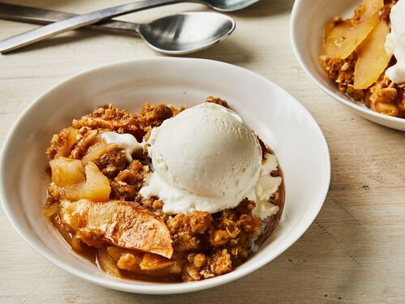

Apple Crisp
This apple crisp is a simple yet delicious fall dessert that's great served warm with vanilla ice cream.


This apple crisp is a simple yet delicious fall dessert that's great served warm with vanilla ice cream.